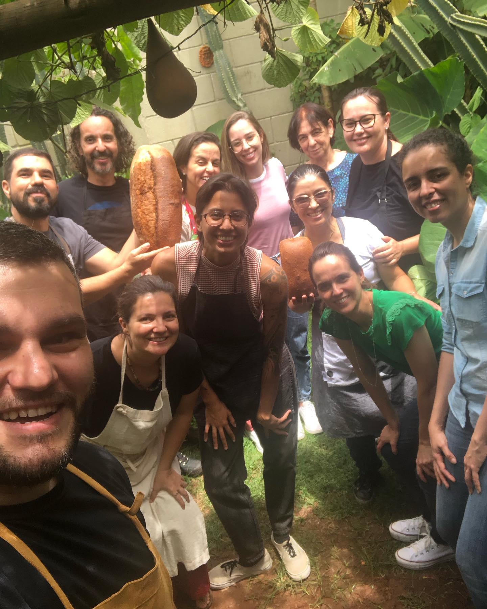

Manhã · 8h às 13hCurso de Pão para Iniciantes
📍 Pão de Verdade – Sta. Mônica, Uberlândia
Você vai criar e manter o seu fermento natural e aprender a assar Pão de verdade — com cheiro de forno e farinha nas mãos.
R$275 por pessoa
Ver detalhes →